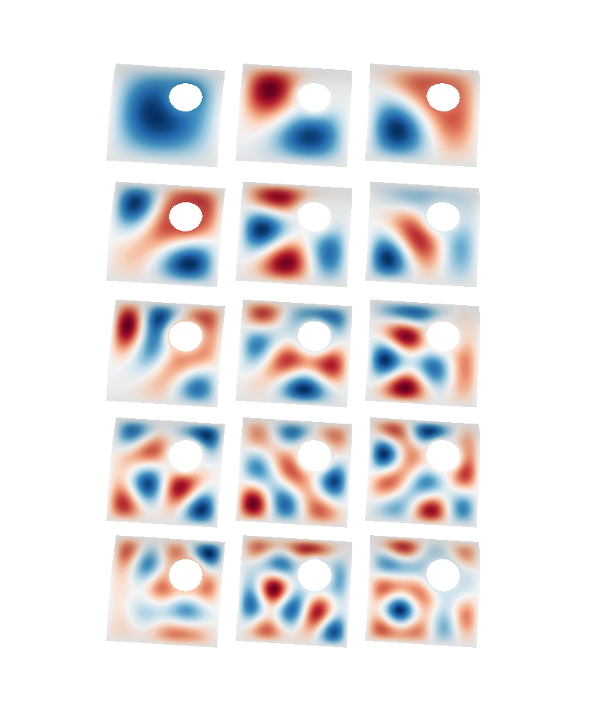

Note
Click here to download the full example code
Figure 2: Surface harmonics modes¶
First 15 surface harmonics of a triangle mesh. The index (and spatial frequency) increases from left to right, row by row. The hole and outer boundary have zero tangential derivative. The mesh discretization is shown in the magnified inset to the right.
- 
Out:
Calculating surface harmonics expansion...
Computing the laplacian matrix...
Computing the mass matrix...
0 0
1 0
2 0
0 1
1 1
2 1
0 2
1 2
2 2
0 3
1 3
2 3
0 4
1 4
2 4
from bfieldtools.mesh_conductor import MeshConductor
import numpy as np
SAVE = False
SAVE_DIR = "./Surface harmonics/"
c = MeshConductor(
mesh_file=SAVE_DIR + "arbitrary_surface.stl",
process=True,
basis_name="suh",
N_suh=15,
fix_normals=True,
)
T_x = 1.5 * np.pi / 2
T_z = -1.02 * np.pi
rotmat = np.array(
[
[np.cos(T_z), -np.sin(T_z), 0, 0],
[np.sin(T_z), np.cos(T_z), 0, 0],
[0, 0, 1, 0],
[0, 0, 0, 1],
]
) @ np.array(
[
[1, 0, 0, 0],
[0, np.cos(T_x), -np.sin(T_x), 0],
[0, np.sin(T_x), np.cos(T_x), 0],
[0, 0, 0, 1],
]
)
c.mesh.apply_transform(rotmat)
from mayavi import mlab
from mayavi.api import Engine
e = Engine()
e.start()
f = mlab.figure(None, bgcolor=(1, 1, 1), fgcolor=(0.5, 0.5, 0.5), size=(750, 900))
surfaces = c.suh_basis.plot(
Nfuncs=c.basis.shape[1], Ncols=2, dist=0.1, colormap="RdBu", figure=f, ncolors=256
)
f.scene.z_plus_view()
1 + 1
#
for surface in surfaces:
surface.actor.mapper.interpolate_scalars_before_mapping = True
# f.scene.camera.parallel_projection=1
# mlab.view(0,160)
f.scene.camera.zoom(1.2)
# f.scene.camera.roll(270)
if SAVE:
mlab.savefig(
SAVE_DIR + "surface_harmonics.png", figure=f, magnification=4,
)
mlab.close()
f = mlab.figure(None, bgcolor=(1, 1, 1), fgcolor=(0.5, 0.5, 0.5), size=(750, 600))
c.plot_mesh(representation="wireframe", figure=f)
c.plot_mesh(opacity=0.2, figure=f)
#
# f.scene.camera.parallel_projection=1
# mlab.view(0,160)
f.scene.camera.zoom(1.5)
f.scene.z_plus_view()
# f.scene.camera.roll(270)
if SAVE:
mlab.savefig(
SAVE_DIR + "suhmesh.png", figure=f, magnification=6,
)
mlab.close()
Total running time of the script: ( 0 minutes 1.434 seconds)